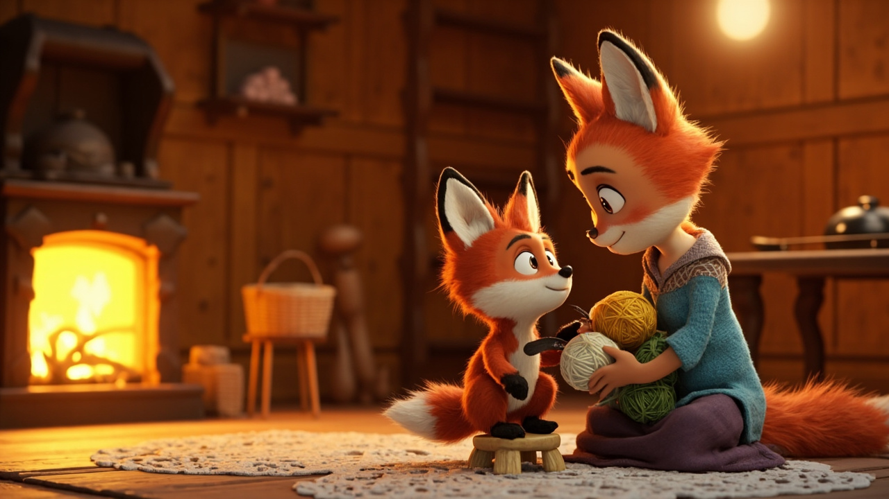
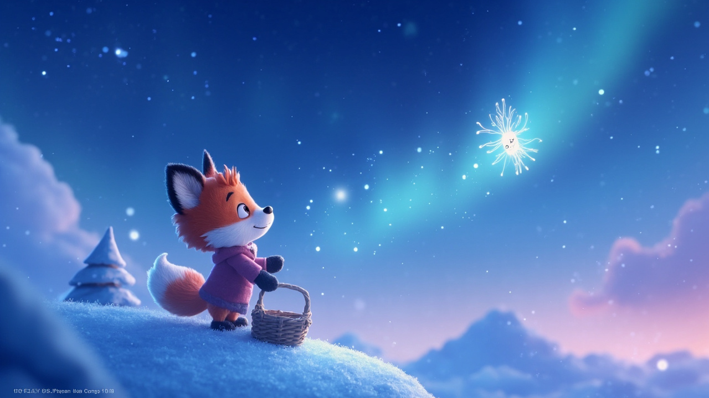
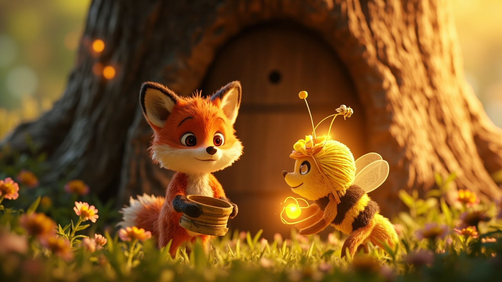
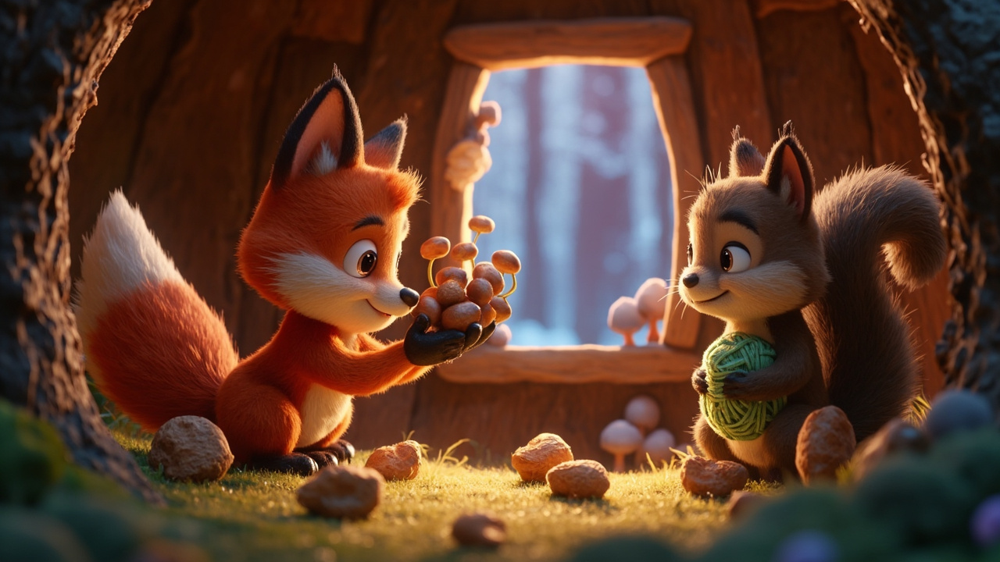
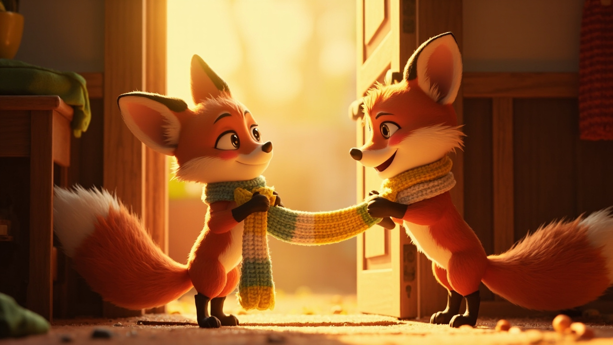

3D 卡通绘本 · 童声朗读版 · 9 页
点击翻页 · 开始阅读
冬天来了，森林里下起了第一场雪。小狐狸蹦蹦跳跳地跑回家，抖了抖身上的雪花，对奶奶说："奶奶，奶奶，冬天到了！我想给您织一条围巾。"

奶奶笑眯眯地说："好呀，那你得去找三种颜色的毛线——白色像雪，黄色像蜂蜜，绿色像森林。"小狐狸点点头，围着奶奶转了三圈，就出发了。

小狐狸爬到山顶，找到了一朵正在休息的小雪花。小雪花说："我把最白的一瓣送给你，但你得答应我，以后下雪的时候，要记得对我说'你好'。"小狐狸认真地答应了。

接着，小狐狸来到老橡树前，咚咚咚地敲了敲门。蜂王笑着说："可以呀，你帮我们采一点花蜜，我们就送你黄色毛线。"小狐狸采了一整天花蜜，脸染得像小花猫，蜂王很感动。

最后，小狐狸找到了小松鼠。小松鼠有点舍不得绿色毛线。小狐狸从篮子里拿出几颗橡果："咱们换好不好？"小松鼠眼睛亮了："成交！"
回到家，天已经黑了。小狐狸在灯下织呀织，织了整整三个晚上。手指被针扎了好几次，它都没哭，只是对着手指轻轻吹一吹气，又接着织。
最后一天晚上，围巾终于织好了！白得像雪，黄得像蜜，绿得像森林，软得像云朵。

第二天早上，奶奶起床，发现小狐狸已经站在门口了。它脖子上系着那条围巾，脸蛋红红的，眼睛亮亮的。奶奶把围巾围上，眼眶一下子就红了："这是我收到过的，最美的礼物。"
窗外，雪还在下。小狐狸牵着奶奶的手，去森林里散步。它们的脚印一深一浅，留在雪地上，像两行小小的诗。
爱在心里
爱一个人，就是愿意为她走很远的路、问很多的人、付出自己的小宝贝。礼物不在贵重，在心里。亲爱的宝贝，你为家人做的每一件小事，爸爸妈妈都记得，也都珍惜得不得了。
晚安，小朋友，做个甜甜的梦。
点击书页左/右半区翻页 · 或按 ← → 方向键